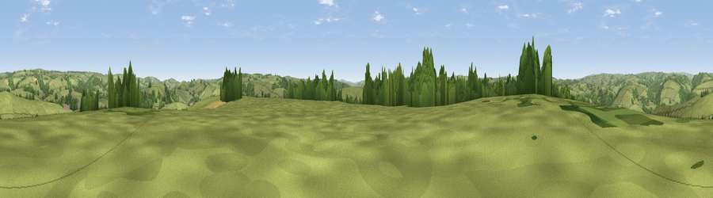

Viewpoint near Exebridge
#26425 in England · top 57% of its area beats it · near Exebridge · path 120 mWhere it is
The exact computed spot (SS 94225 23225). Click the marker for map links.
Public access: the nearest public right of way is about 120 m away — the final stretch may cross private land. Computed from Natural England's CRoW access layer and OpenStreetMap rights of way — not the legal definitive map. Always verify locally.
The view, rendered

A 360° render of this exact spot computed from the terrain model, tree cover and land cover — summer colours, afternoon light, calibrated against photographs of famous viewpoints. Real trees, hedges and buildings will differ in detail.
The panorama
Grey silhouette: terrain skyline in each direction (720 bearings, Earth curvature and refraction included). Dashed green: skyline with trees (+15 m) and buildings (+8 m) as obstacles. Blue strip: how far the ground is visible on each bearing.
Where the view opens
Wedge length = distance to the farthest visible ground on that bearing (vegetation-aware). Rings at 10, 25 and 50 km.
What fills the view
78% grassland · 20% woodland · 2% cropland
Angular shares of the visible panorama (visual magnitude), not map area. Landscape diversity 0.26 (0–1 Shannon).
Key numbers
More beautiful places nearby
The staircase of upgrades: each row has a higher view potential than everything closer. Driving times are estimates from straight-line distance, calibrated against real road routing — check an actual route before setting out.
| Place | Direction | Drive | Score |
|---|---|---|---|
| Westhill | S · 2 km | ~4 min | 48.6 |
| Viewpoint near Bampton | SE · 3 km | ~8 min | 54.2 |
| Viewpoint near Oakford Bridge | SSW · 4 km | ~9 min | 56.1 |
| Viewpoint near Bampton | SE · 4 km | ~9 min | 59.0 |
| Viewpoint near Skilgate | ENE · 5 km | ~11 min | 60.4 |
| Viewpoint near Skilgate | ENE · 5 km | ~12 min | 61.0 |
| Viewpoint near Huntsham | SE · 5 km | ~12 min | 65.4 |
| Viewpoint near Skilgate | NNE · 6 km | ~12 min | 72.5 |
50.99866, -3.50874 · source: screening · position refined by local search. Computed location — check access rights before visiting.